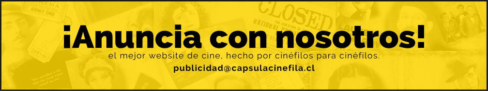

Alexander Rodríguez
Esta película tiene varios puntos a su favor en los que destaca principalmente una interpretación magistral del actor Riz Ahmed en donde es capaz de transmitir todo el dolor e impotencia que experimenta al darse cuenta de su pérdida auditiva. Apoyándose de un trabajo muy bien logrado de diseño sonoro y un ritmo audiovisual que te permite situarte en la posición del personaje de Rubén desde una posición tensa donde desde el primer momento te dejan ser consciente de la problemática irreversible de Rubén aún dentro de la idea de que prefiere ignorarse y tomarse como algo que eventualmente podría mejorar.
El diseño sonoro forma una parte muy importante dentro de la trama, ya que desde el primer momento te van mostrando el deterioro de la audición de Rubén con el pasar de la película dejando al espectador una sensación de empatía más profunda ya que terminas experimentando lo que podría estar experimentando una persona en una situación parecida… el proceso de aceptación de Rubén es tedioso y abrumador, al punto de hacerte ver que mientras más cómodo se siente el personaje dentro del grupo de ayuda, dentro de sí aumenta mas la agonía y el dolor de sentir que perdió gran parte de su vida debido a su problema.
El montaje es crucial en esto, ya que se pueden notar desde un principio como los cortes entre escenas son repentinos y con mucho contraste entre sí. Escenas de mucha paz y calma terminan llevando a escenas más tensas y escandalosas. Esto podría representar los problemas internos que sufre el personaje al querer ignorar lo que le está pasando y tratar de mostrarse calmado dentro de todo, pero que a fin de cuentas es un problema irreversible que es algo que deberá aceptar eventualmente.
Con el pasar de la película, el deterioro en la audición de Rubén va aumentando al punto de perderla en su totalidad para el tercer acto, pero lo que lo hace interesante es que el personaje, por el deseo de aferrarse a esa vida que ya no existe, decide renunciar a la poca audición que le quedaba. Para terminar dándose cuenta que más que tratar de superar su problema, estuvo ignorándolo hasta sentirse mejor… la película termina con un cierre que podría considerarse satisfactorio para algunos o muy crudo para otros, ya que Rubén, al darse cuenta de que ya no volverá a recuperar su audición, pero que eso no es impedimento para poder estar junto a la mujer que ama, decide aceptar su nueva vida de la manera que se le intento enseñar pero que el ignoro, viéndolo como una característica en sí mismo que como una discapacidad. Y es que durante toda la película Rubén no es consciente que la sordera no sería un impedimento para lograr llevar la vida que el deseaba…
La película goza de muchos puntos positivos en cuanto a guion, edición y casting. Tiende a fallar un poco quizás al final, ya que podría dejarnos un vacío dentro de nosotros al pensar que la vida como una persona sin audición se basa mas en resignarse al hecho de no poder escuchar, pero la película en cierto modo te transmite que no es así, sino que viéndolo desde la perspectiva de Rubén, quizás esa era se manera de como aceptarse en su nueva vida, tomando en cuenta la personalidad impulsiva y depresiva de Rubén. Sin embargo, la película queda como evidencia de que es una problemática que cada quien asimila a su manera y que a fin de cuentas, su mensaje principal va también de la mano con el hecho de que nadie está exento de sufrir algo así, dejándote en una posición donde te cuestionas el cómo podrías reaccionar ante una situación tan complicada como esa.
A pesar de tener una gran puesta en escena y contar con un ritmo muy fluido al transcurrir la película, entre otros puntos a favor, Sound of Metal no alcanza la puntuación más alta debido a que no termina de generar esa empatía dentro del espectador ante un sector muy amplio de la población que no ha logrado ser representado de una manera más profunda dentro de la película. Añadido al vacío que existe en la trama en el último tercio de la película, podemos concluir que Sound of Metal es una película que merece el aprecio del público por varios puntos en el que destaca la interpretación de Riz Ahmed pero sin trascender dentro del cine como una película innovadora o diferente.